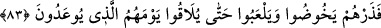
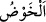

sorumluluğu yüklemektedir. Bir de Allah’ı, kâfirlerin nitelemiş oldukları her türlü
cismânî sıfatlardan tenzih vardır. Zîrâ Allah şâyet cisim olsaydı, bu âlemi yaratıp
yönetmeye muktedir olamazdı.
83. Sen bırak onları, kendilerine söz verilen günlerine kavuşuncaya kadar bâtıla
dalsınlar, oynaya dursunlar.
Madem ki bu denli açık delilleri işittikleri halde hakka boyun eğmiyorlar; “sen bırak
onları” kâfirleri “kendilerine” senin dilinden “söz verilen günlerine kavuşuncaya”
ve o günü görünceye “kadar bâtıla” ve yalanlarına “dalsınlar, oynayadursunlar.”
“__WORD__/havz” suya dalmak, orada yürüyüp ilerlemektir. Diğer işlerde mecaz olarak
kullanılır. Bu kelime Kur’ân-ı Kerîm’de daha ziyâde tenkid etme ve yerme
durumlarında gelmiştir. Müfredat’ta böyledir. Yani o kâfirler dünyalarında oynasınlar.
Çünkü onların sözleri de işleri de sırf cehâlet ve oyun babındandır. Âyette muzâri
fiillerin cezimli gelmesi, emrin cevâbı oluşlarındandır. Kişinin yaptığı iş sağlam bir
maksada yönelik değilse “falanca oynadı” denilir. Lezzet ve zevki olmayan her oyun
abestir. Bu bakımdan ancak lezzet ve safâsı olan şeye oyun, demişlerdir.
Peygamber (s.a.)’in dilinden onlara vaadedilen gün, kendileriyle mülâkâtın yapılacağı
kıyâmet günüdür. Zîrâ onlar o gün hem kendi yaptıklarını hem de kendilerine yapılacak
olanları bilirler.
Müftî Sa’dî şöyle demiştir: Daha belirgin şekilde anlaşılanı, bahsedilen günün ölüm
günü olmasıdır. Zîrâ kâfirlerin bâtıl ve yalanlara dalarak dünyalarında oynayıp
durmaları o gün son bulur.
Fakir (Bursevî) der ki: Burada bahsedilen gün, kâfirlerin inkâr ettikleri kıyâmet
günüdür. Yoksa vukuunda hiç şüphe etmedikleri ölüm günü değildir. Zîrâ
Peygamberimiz (s.a.)’in “kim ölürse onun kıyâmeti kopmuştur”[196] hadisiyle ölüm
gününün kıyâmete bitişik olduğuna işâret etmiştir. Böyle olunca dünyada bâtıla dalarak
oynayıp durmak, kıyâmet günü son bulmuş sayılır.
Âyet bize aynı zamanda bu kâfirlerin Allah tarafından kalplerinin mühürlendiğini
dolayısıyla içinde bulundukları inkâr hâlinden ebedî dönemeyeceklerini de
bildirmektedir. Şuna da işâret edilmektedir ki, Allah Teâlâ insanları değişik durum ve
merhalelerde yaratmıştır. Bunlardan bir kısmını cennet için yaratmıştır. Onları îman,
sâlih amel, şerîate boyun eğmek ve Peygamberimiz (s.a.)’e uymakla cennete
hazırlamaktadır. Bir kısmını ise cehennem için yaratmıştır. Onları da dâveti kabul
etmemek, inkâr etmek ve isyanda bulunmakla cehenneme hazırlar. Böyleleri hayvânî ve
nefsânî tabîata havâle edilirler; öyle ki artık boş ve faydasız şeylere dalmaktan, oyun ve
eğlenceye meyletmekten kendilerini alamazlar.